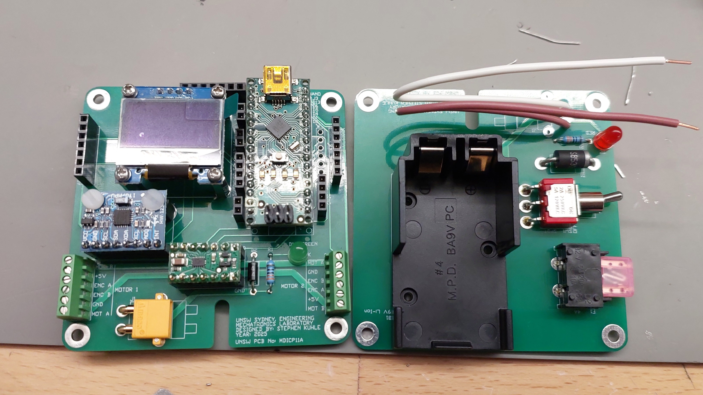
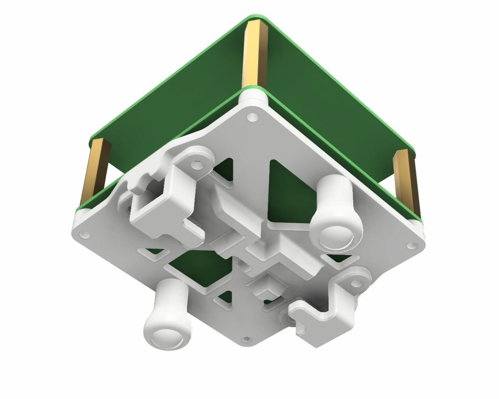
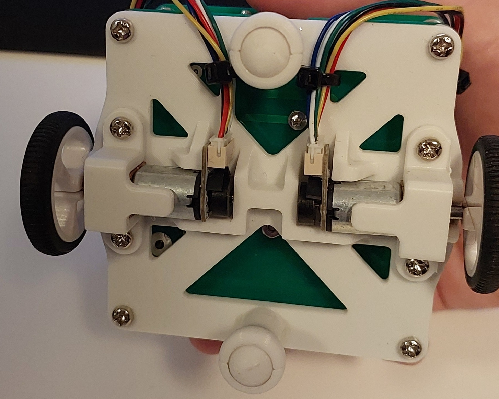
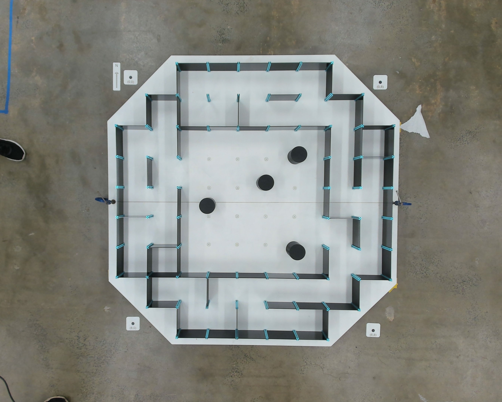
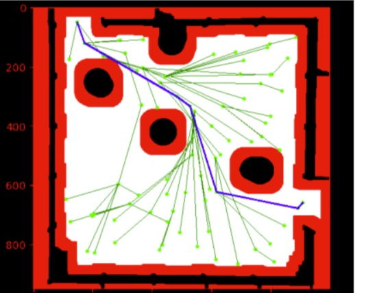
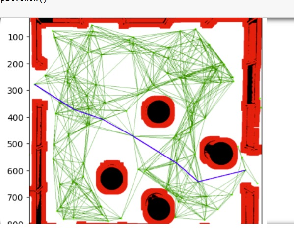

The Problem
The challenge of the micromouse competition involved three levels of increasing autonomy. The first required navigating an unseen maze by generating a path using computer vision from an overhead camera. The second introduced an open area with random obstacles, demanding a SLAM-like approach while still utilising overhead vision. The final challenge required the robot to complete a maze completely autonomously, without any assistance from the overhead camera, testing its ability to sense, map, and plan paths independently.
My Role & Responsibilities
I was in charge of the mechanical and software integration of the micromouse robot, designing and assembling the full system in CAD while programming the microprocessor using C++ to control all sensors and actuators. This involved developing sensor fusion algorithms that combined data from three LiDARs, an onboard IMU, and encoders, tuning PID controllers for precise movement, and implementing the robot’s control logic for smooth, reliable navigation. I also collaborated on higher-level path-planning, integrating computer vision inputs using Python with openCV to enable the robot to navigate unseen mazes and dynamic obstacle environments.
Design & Assembly
I soldered and integrated all PCBs and electrical components, then designed a structural mounting system to securely hold the dual PCB wafers, drive motors, and wheel assembly together. Because the robot used a two-wheel configuration, I incorporated ball-bearing stabilisers to ensure stability and smooth motion. Particular focus was placed on minimising overall height to lower the centre of gravity, improving balance and high-speed performance.



Robot Control Software
I programmed the microcontroller in C++ to manage all sensing, actuation, and motion control. This included implementing and tuning PID controllers for precise wall-following, turning, and straight-line stability. To improve accuracy during straight driving, I implemented a parabolic sensor fusion method that combined LiDAR and IMU data to minimise drift and smooth trajectory corrections. The final control architecture enabled reliable, autonomous navigation.
Computer Vision & Path Planning
In a secondary role, I supported the computer vision team by developing and testing path-planning algorithms separately in Python using OpenCV. For the SLAM-style challenge I explored RRT* and Dijkstra for open-space path generation in a more complex, object-filled environment.



Results & Key Learnings
- Developed a micromouse that completed all three competition levels, excelling in the generated-path and fully autonomous challenges.
- First in the competition to successfully complete the maze and ultimately finished in the top 10% of teams for speed.
- Awarded an 85% High Distinction for this project.
This project strengthened my understanding of sensor fusion, particularly combining LiDAR and IMU data for stable navigation. I developed practical experience tuning PID controllers for precise motion control and gained deeper insight into path-planning algorithms.